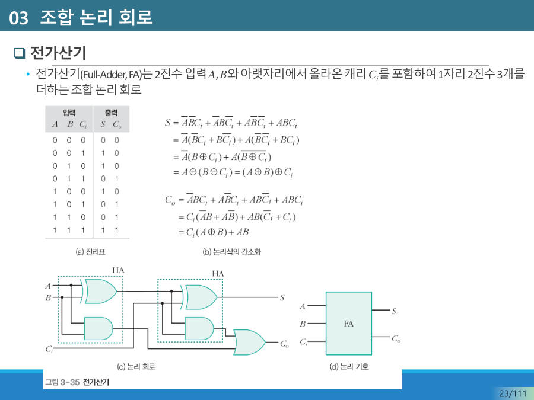

전가산기 (Full Adder) ★★★
여러 자리 덧셈에서는 아랫자리에서 올라온 올림도 더해야 해요. 예를 들어 101 + 011(5 + 3)에서는 각 자리마다 올림이 이어서 생겨요. 그래서 한 자리를 계산하는 회로의 입력은 3개(A, B, 아랫자리의 올림 Cin)가 돼야 해요.
전가산기(Full Adder, FA) = 2진수 입력 A, B와 아랫자리에서 올라온 올림 Cin까지 1자리 2진수 3개를 더해 합(S)과 올림(Cout)을 출력하는 조합 논리 회로.
| A | B | Cin | S (합) | Cout (올림) |
|---|---|---|---|---|
| 0 | 0 | 0 | 0 | 0 |
| 0 | 0 | 1 | 1 | 0 |
| 0 | 1 | 0 | 1 | 0 |
| 0 | 1 | 1 | 0 | 1 |
| 1 | 0 | 0 | 1 | 0 |
| 1 | 0 | 1 | 0 | 1 |
| 1 | 1 | 0 | 0 | 1 |
| 1 | 1 | 1 | 1 | 1 |
8줄을 통째로 외울 필요 없어요. 입력 세 개 중 1이 몇 개인지만 세면 돼요. 1이 홀수 개(1개 또는 3개)이면 S = 1, 1이 2개 이상이면 Cout = 1이에요.
1이 0개면 둘 다 0, 1이 1개면 S만 1, 2개면 Cout만 1, 3개면 둘 다 1이에요. 1 + 1 + 1 = 11(2진수)이라는 뜻이에요.

회로 구성은 이래요. 첫 번째 반가산기가 A와 B를 더하고, 그 합을 두 번째 반가산기에서 Cin과 더해요. 두 반가산기에서 나온 올림 둘을 OR로 합치면 최종 Cout이에요. 게이트 수로는 XOR 2개, AND 2개, OR 1개예요.
S = A ⊕ B ⊕ Cin(XOR를 두 번)Cout = (A ⊕ B)·Cin + A·B
5 + 3 = 8을 4자리 전가산기 4번으로 따라가 볼게요. 아랫자리(오른쪽)부터 올림을 넘겨요.
| 자리 | A | B | Cin | 1의 개수 | S | Cout |
|---|---|---|---|---|---|---|
| 0번 (맨 오른쪽) | 1 | 1 | 0 | 2 | 0 | 1 |
| 1번 | 0 | 1 | 1 | 2 | 0 | 1 |
| 2번 | 1 | 0 | 1 | 2 | 0 | 1 |
| 3번 | 0 | 0 | 1 | 1 | 1 | 0 |
합 비트를 위에서부터(3번→0번) 쓰면 1000, 즉 8이에요. 앞 자리의 Cout이 바로 윗자리의 Cin이 되는 것이 핵심이에요.
초등학교에서 배운 세로셈과 똑같아요. 한 자리씩 더하다가 10이 넘으면 윗자리로 올려서 거기서 한 번 더 더해요. 전가산기는 "이번 자리 두 수와 아래에서 올라온 올림"까지 한 번에 더하는 한 칸짜리 세로셈 기계예요.
전가산기(full adder)는 두 개의 입력 비트 A, B와 한 개의 올림 비트 Cin이 들어갔을 때 합 비트 S와 올림 비트 Cout을 출력하는 회로이다. 입력에 1이 홀수 개이면 S가 1이고, 1이 두 개 이상이면 Cout이 1이다. 반가산기 2개와 OR 게이트 1개로 구성된다.
잠깐 확인 — 전가산기에서 A = 1, B = 1, Cin = 1이면 S와 Cout은 각각 무엇인가요?
S = 1, Cout = 1이에요. 1이 3개(홀수)라서 S = 1이고, 두 개 이상이라서 Cout = 1이에요. 1 + 1 + 1 = 11이에요.
화면을 가리고 "전가산기 (Full Adder) ★★★"을(를) 친구에게 설명하듯 한 문장으로 말해 보세요. 막히면 위의 빨간 칸만 다시 보고 넘어가요.